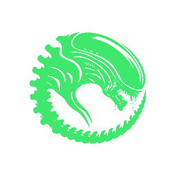

Fans that actually respond
Firmware-auto, maximum, per-fan manual duty, and independent per-fan modes. Off the stock curve, the same chip holds 2406 MHz instead of 1446 — +61.8% sustained throughput, measured over a 4×20-minute A/B/A.

Take control of your Acer Predator. On Linux. Properly.
Fans · keyboard lighting · cooling curves · telemetry · per-game profiles
$ curl -fsSL https://alien.hartle.tech/install.sh | sh
Debian · Ubuntu · Mint · Fedora · Arch · NixOS — or take a package yourself
01 / the problem
PredatorSense exists on Windows. On Linux you get a laptop whose fans, keyboard and thermal behaviour are entirely out of your hands — and a stock fan curve that never ramps past about 3500 RPM no matter how hot the chip gets.
Alien is the control panel that was missing. It speaks the real Acer gaming-WMI protocol, recovered by reverse-engineering PredatorSense itself, so the firmware treats it exactly like the vendor tool.
Firmware-auto, maximum, per-fan manual duty, and independent per-fan modes. Off the stock curve, the same chip holds 2406 MHz instead of 1446 — +61.8% sustained throughput, measured over a 4×20-minute A/B/A.
Per-zone colour and brightness, plus Breathing, Wave, Zoom, Shifting and Neon — through the real vendor protocol, read back per zone so what you see is what the firmware holds.
Asymmetric hysteresis, dwell timers, a critical latch and boot-into-failsafe. Quiet at idle, ramps before the chassis saturates. PredatorSense has no equivalent.
Apply a profile for a game and always get it back — even on SIGKILL, even across suspend. The baseline is written to disk before the hardware is touched, so nothing strands your fans at 100%.
Which cap is actually binding — thermal, power, or nothing at all. No other tool on Linux or Windows reports this, which is why so much tuning advice is folklore.
A desktop app, a terminal UI that works over SSH, and a scriptable CLI with JSON output. One protocol library underneath, one unprivileged socket.
02 / specimen comparison
Written to be checkable. Where Alien is behind, it says so — including the two controls this firmware simply refuses.
| Capability | PredatorSense | Alien |
|---|---|---|
| Runs on Linux | no | yes |
| Fan automatic / maximum | yes | yes |
| Per-fan manual duty | yes | yes |
| Independent per-fan modes | no | yes |
| Temperature curve with hysteresis | no | yes |
| Four-zone lighting and effects | yes | yes |
| Per-game profiles | yes | yes |
| Profile survives a crash or SIGKILL | no | yes |
| Reports which limiter is binding | no | yes |
| Scriptable CLI with JSON output | no | yes |
| Terminal UI, works over SSH | no | yes |
| Reports what your model really supportsrather than shipping dead controls | no | yes |
| CoolBoost | yes | yes |
| GPU Normal / Faster / Turboon the PH315-53 target | yes | yes |
| Boot animationgetter-gated; offered only where the firmware answers | yes | yes |
Two PredatorSense features are absent from that table, and the reason in
each case came out of Acer's own shipped files rather than a guess.
Keyboard backlight timeout is not something Alien is
missing — it does not work in PredatorSense either. Its checkbox reads a
hotkey index that defaults to zero, which makes the call it sends
byte-for-byte identical to Alien's, and this firmware answers that call
with status 0xe2. It is a dead control on both sides.
Battery charge limit is not in the recovered
PredatorSense versions at all: no method in the WMI surface, no misc
selector, and none of the nineteen per-model support files declares it.
The OSD overlay stays out for a different reason — it is
not hardware control, and a Linux OSD belongs to the compositor rather
than to a fan daemon.
Full breakdown, including facer and Linuwu-Sense: docs/parity.md
03 / installation
The one-liner detects your distribution, installs the matching package and the kernel module it needs, sets up the service and tells you the single manual step left. It never changes a fan or a light on its own.
$ curl -fsSL https://alien.hartle.tech/install.sh | sh
Piping to a shell is not for everyone, and you should not have to trust us. Read it first:
$ curl -fsSLO https://alien.hartle.tech/install.sh && less install.sh && sh install.sh
sh install.sh --uninstall reverses everything it did.
$ sudo apt install ./alien-predator_*_amd64.deb
Grab the .deb from
the latest release.
Pulls in acpi-call-dkms from Debian/Ubuntu's own repositories.
$ sudo dnf install ./alien-predator-*.x86_64.rpm
Fedora needs the kernel module from a COPR first — it is in neither Fedora nor RPM Fusion:
$ sudo dnf copr enable rhea/acpi_call && sudo dnf install akmod-acpi_call
$ sudo pacman -U ./alien-*-x86_64.pkg.tar.zst
acpi_call-dkms is in extra, so it resolves
without touching the AUR.
$ inputs.alien.url = "github:code-hartle-tech/alien";
Then add alien.nixosModules.default and
services.alien.enable = true; with your username in
services.alien.users. This is the directly verified path —
the reference machine runs it.
$ git clone https://github.com/code-hartle-tech/alien && cd alien/code && cargo build --release --locked --workspace
Rust 1.88+. You will also need the alien group, the
acpi_call module, the hardened systemd unit and correct
socket ownership — don't run a frontend as root instead.
One thing everybody forgets: group membership does not reach a session that is already running. After installing, log out and back in — otherwise every command will say it cannot reach the daemon.
04 / specimen acquisition
Alien is model-gated on purpose. Rather than poke unproven firmware indices on someone else's laptop, it refuses what it cannot prove — so a model stays a candidate until a real machine reports in.
One live-verified machine so far. Eighteen more are mapped from Acer's
own plug-ins and need hardware receipts. If yours is one of them, you are
the missing piece — and alien doctor never writes to your
hardware, so running it is safe on a machine Alien does not support yet.
05 / support
No licence tiers, no telemetry, no upsell. If this saved you an afternoon and you want to put something behind it, these go directly to the work.